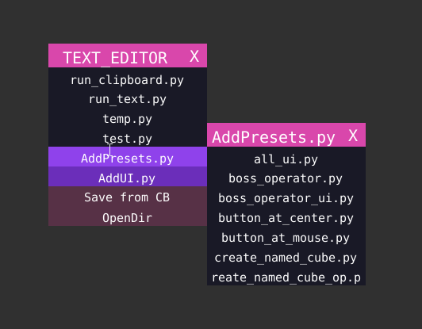
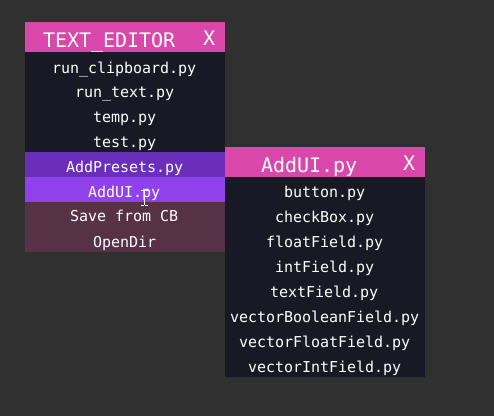

Text Editor Scripts¶
If you choose to use Text Editor, there are two helpful scripts placed in TEXT_EDITOR contextual menu, So
use_space toggle button should be green.
AddPreset.py¶
This is an example of Dynamic Menu
Note
Functionality-wise this is similar too TextArea Templates pull down menu.
This will create a new TextData block. You can press OpenDir in the menu and you will find a folder named _add_presets_files
you can save new files in that folder to be used as starting point template. Files in this folder are the ones shown as submenu
content of AddPreset.py.
1 2 3 4 5 6 7 8 9 10 11 12 13 14 15 16 17 18 19 20 21 22 23 24 25 26 27 28 29 30 31 32 | import bpy
from boss.utils import getFileList
from os.path import dirname, join,basename
from boss_quick_run.Q import getCode as QGetCode
def getCodeTTT(caller):
return QGetCode(caller.param)
def getCode(filePath):
with open(filePath, 'r') as file:
data = file.read()
return data
def create_text_data(caller):
t = bpy.data.texts.new(basename(caller.param))
t.write(getCode(caller.param))
bpy.context.space_data.text = t
caller.op.quit()
def get_sub_md():
# texts, onClicks, toolTipTexts,toolTipImages, get_submenu_data_fns,params
dir_codesPath = join(dirname(__file__),"_add_presets_files" )
codeFileNames = getFileList(dir_codesPath)
codeFilePaths = [join(dir_codesPath,f) for f in codeFileNames]
cnt = len(codeFileNames)
return codeFileNames, [create_text_data]*cnt, [getCodeTTT]*cnt,\
['']*cnt, [None]*cnt, codeFilePaths
|
You can see line 26 highlighted above that _add_presets_files is hardcoded. I have chosen a name that starts with
underscore so that it is not treated as normal directory and create further submenu.
AddUI.py¶
This is an example of Dynamic Menu
This will append text to existing TextData block. So you can save code-snippets. Files are saved in the _add_ui_files
folder.
1 2 3 4 5 6 7 8 9 10 11 12 13 14 15 16 17 18 19 20 21 22 23 24 25 26 27 28 29 30 31 32 33 34 35 36 37 38 39 40 41 42 43 44 45 46 47 48 | import bpy
from boss.utils import getFileList
from os.path import dirname, join
def getCodeTTT(caller):
with open(caller.param) as f:
lines = f.read().splitlines()
return lines
def getCodeLines(filePath):
with open(filePath) as f:
lines = f.read().splitlines()
return lines
def getCode(filePath):
with open(filePath, 'r') as file:
data = file.read()
return data
def paste_code(caller):
curText = bpy.context.space_data.text
if curText:
spaceFromLeft = curText.current_character
start_line_index = curText.current_line_index
for i, line in enumerate(getCodeLines(caller.param)):
if i == 0:
curText.write(line + '\n')
else:
curText.cursor_set(start_line_index)
curText.write(' '*spaceFromLeft + line + '\n')
start_line_index +=1
curText.cursor_set(start_line_index,character=spaceFromLeft)
def get_sub_md():
# texts, onClicks, toolTipTexts,toolTipImages, get_submenu_data_fns,params
dir_codesPath = join(dirname(__file__),"_add_ui_files" )
codeFileNames = getFileList(dir_codesPath)
codeFilePaths = [join(dir_codesPath,f) for f in codeFileNames]
cnt = len(codeFileNames)
return codeFileNames, [paste_code]*cnt, [getCodeTTT]*cnt,\
['']*cnt, [None]*cnt, codeFilePaths
|